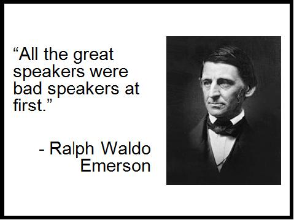

This is goin going to help you give a good presintation
The way to give a good presintation part 1

sometimes to be good at something you have to be bad at it so when you do it againg you know where your mistakes where.
in this website there were some god tips on how to give a good presintation.
Body language
posture:stand straight and keep your head up
Eyes:If the room is small choose one person to keep your eyes on for the presintation and if the room is big with a large amount of pepople look foward or at theier foreheads
Body: make sure that you move around a little and stop from time to time but dont stay in one place
The hands: use your hands to point to your main topic or have when you talk try to use your hands.
in this website they give you some hints if you are scared of public speaking like me